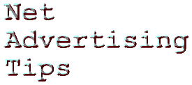

|
 (For the Wannabe Web Advertiser) by IntroductionSpamming doesn't work. Newbie advertisers, knowing nothing about Net culture, think they can do an "in your face" advertising campaign with impunity. Little do they know the Net works both ways. Many have had their account closed literally within hours of the offense. Their reputations tarnished forever on the Net. These are the lucky ones. Others have had their phone numbers and fax machines tied up for days. Threats, sabotage, early morning phone calls, etc. are not unheard of in the most flagrant situations. Advertising on the Net is a double edged sword if you don't know what you are doing.I recommend all wannabe-Net-advertisers, who are serious about advertising on the Net, to read the Joel Furr's Usenet article entitled:
This file in plain text can also be downloaded by anonymous FTP from rtfm.mit.edu in the directory /pub/usenet-by-group/news.announce.newusers In fact, I recommend everyone read it if you haven't. Most, if not all of it, also applies to personal email. This article concisely explains why you shouldn't spam the Net. There are hidden costs. Not the least is the resources takened on other machines to store the unwanted junk email and the time takened from each person who receives it. Also, some people pay by the number of email messages they receive. One can imagine their reaction receiving junk email that was not requested and unwanted. This article also describes the acceptable ways to advertise on the Net besides the World Wide Web.
The PhilosophyIn real estate, the catch phrase is Location, Location, Location. On the Net, the catch phrase is:
Content can be defined as non-trivial information that is valuable or useful to a group of people. The more unique and specialized the content (it cannot be found elsewhere), the more valuable it probably is. Do not confuse this with advertising hype which has almost zero content. The philosophy of the Net is each individual freely gives something he knows to the Net. If each person does this, then the sharing of knowledge mutually benefits everyone. This is the strength of the Net. This is why it is so valuable as a resource. This is why the Net is a thing of great beauty. If everyone just took the knowledge without contributing anything back, the Net would soon become a vast wasteland. What little content there was would be hopelessly outdated and not useful. Crass advertising does not contribute content to the Net. (Except in devising ways on how to stop it!) It benefits only the advertiser, not everyone else. If you want to be accepted on the Net, add something to the content. Post articles you've written. Post your stories, poems, music, insights, etc. Intelligently participate in special interest groups. Make available real, unique information you think people would find useful or valuable. Use your imagination. The experience will make you a better person. If you are sincere, people will start coming to you and may even buy your products and/or services. |
| My Writings | How Do I Stop Unwanted Junk Email?! |